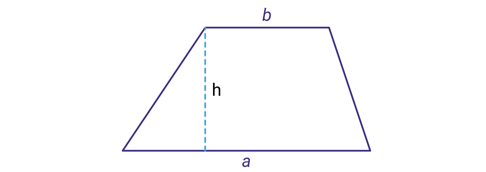

Python som kalkulator
Contents
Python som kalkulator¶
Her skal du lære hvordan du kan sette inn i formler i Python. Du skal blant annet lære hvordan du
lagrer tall og andre typer objekter i Python
hvordan du kan sette inn i formler
bruke løkker til å gjenta utregninger flere ganger.
Du skal også lære litt om ulike datatyper.
Før vi kommer igang og skal lære mer om programmering, kan du se filmen nedenfor. I den forklarer vi litt om hvordan vi skriver og kjører programmer som vi har laget.
Her er lenkene som er nevnt i filmen:
Thonny: https://thonny.org/
Vi har følgende regneoperasjoner i Python:
| Symbol | Operasjon | Eksempel | Resultat |
|---|---|---|---|
| + | Addisjon | 1+2 | 3 |
| - | Subtraksjon | 23-11 | 12 |
| * | Multiplikasjon | 4.3*5.5 | 23.65 |
| ** | Potens | 2**3 | 8 |
| // | Heltallsdivisjon | 10//4 | 2 |
| % | Modulo (restledd) | 28 % 12 | 4 |
Merk at du må bruke punktum som desimalskilletegn i Python.
Regn ut følgende oppgaver i konsollen nedenfor:
\( 34+5\cdot 32-1\)
\( 2^5-2^3\)
Hva er klokken om 1000 timer til, når den er 10.00 nå?
Hvis du får meldingen «Connection to server timed out...» må du klikke på >_Console i menyen til trinket.
Eksempel 1¶
I filmen nedenfor får du se hvordan vi kan skrive inne ulike størrelser som vi ønsker å sette inn i en formel. Vi skal først se hva
blir når \(n = 100\). Deretter skal vi regne ut verdien til
når \(v = 10\), \(t=1.5\) og \(a = -9.81\).
Oppgave 1
Formelen for arealet (A) til et trapes er gitt formelen

Lag et program som regner ut arealet til trapeset når \(a = 4.3\), \(b = 3.2\) og \(h = 2.0\).
Å be brukeren om input¶
I filmen nedenfor viser vi hvordan vi kan bruke kommandoen input til å be om informasjon fra brukeren av programmet.
I filmen har vi skrivet inn følgende kode:
navn = input("Skriv inn navnet ditt: ")
print("Hei", navn, "Håper du får en fin dag!")
Når programmet kjøres, vil brukeren bli bedt om å skrive inn navnet sitt. Dette blir da lagret i variabelen navn. Denne kan vi så bruke videre. På den andre linjen har vi printet den til skjermen sammen med tekstene «Hei» og «Håper du får en fin dag».
Datatyper¶
De ulike objektene vi bruker når vi programmerer i Python er av det som vi kaller ulike datatyper. I første omgang er det tre datatyper som er viktig å kjenne til. Disse er int (heltall), float (desimaltall) og str (tekst-strenger). I filmen nedenfor viser vi hvorfor det er viktig å være bevisst dette når vi programmerer.
Det er mange flere typer datatyper enn strenger og desimaltall i Python. Tabellen nedenfor viser fem slike datatyper som du vil møte etter hvert som du jobber med Python:
|
Kode |
Datatype |
Eksempel |
|
int |
Heltall |
434342 |
|
float |
Desimaltall |
3.14159 |
|
str |
Streng (tekst) |
"Her er en tekst" |
|
bool |
Boolsk verdi |
False |
|
list |
Liste |
[2, 4, "Sko", False] |
Vi regner ut en sum i Python¶
Vi har tidligere brukt blokkprogrammering til å regne ut summer. I filmen nedenfor skal vi regne ut summen
ved å lage et lite program.
Vi skal da lage en for-løkke og vi skal bruke range-kommandoen. Dette svarer til nøyaktig det vi gjorde tidligere når vi brukte blokker.
Se på følgende kode:
s = 0
for i in range(1, 101):
s = s + i**2
print(s)
Kommandoen range(1, 101) gir oss altså tallene 1, 2, 3, …, 100. Her har vi også brukt innrykk i linjen der det står s = s + i**2. Dette må vi gjøre for å fortelle programmet hva som skal være med i løkken vi lager. Siden print(s) ikke har et innrykk, så skal ikke s printes ut i hvert steg i løkken.
Oppgave 2
Se om du kan lage et program som regner ut summen
I filmen nedenfor ser du en løsning av oppgaven på ovenfor.
Oppgave 3
Lag et program som ber brukeren om et helt tall \(n\) og som deretter regner ut summen av de \(n\) første oddetallene.
Du kan starte programmet ved å skrive n = int(input(«Skriv inn et naturlig tall:» )